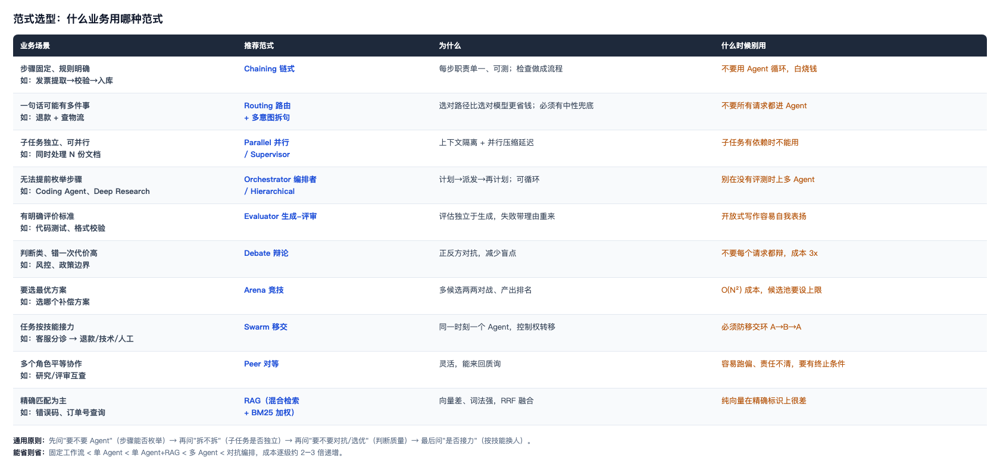
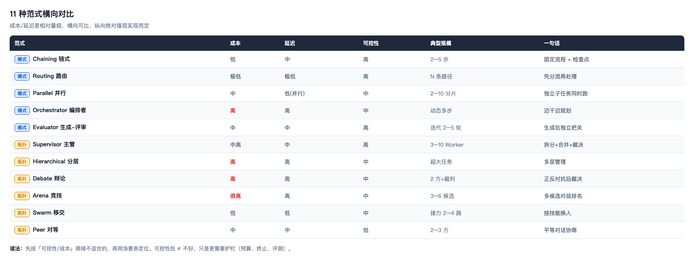

范式选型指南：什么业务用哪种范式
先给结论：选型的四个问题
text
一个需求进来，按顺序问四句：
1. 步骤能枚举吗？ ──── 能 ──→ 不用 Agent，固定工作流/链式
│ 不能
2. 要拆成独立子任务吗？ ── 要 ──→ 主管 / 分层（还要看管不管得过来）
│ 不要
3. 需要多视角对抗判断吗？ ─ 需要 ─→ 辩论 / 竞技
│ 不需要
4. 任务是按技能接力吗？ ─── 是 ──→ 移交（Swarm）
│ 不是
└────────────────────→ 单 Agent + 工具/RAG（多数产品的真实答案）
成本从低到高：固定工作流 < 单 Agent < 单 Agent+RAG < 多 Agent < 对抗编排，每上一级大约贵 2–3 倍。 能省则省。
图 1：按业务场景选范式

图 1 · 左边是业务场景，右边是推荐范式、理由与「什么时候别用」
图 2：11 种范式横向对比

图 2 · 成本/延迟/可控性/规模横向可比；可控性低不等于不好，只是更需要护栏
逐个说：适用业务与反例
模式类（控制流形状）
| 范式 | 最适合 | 典型业务 | 反例（别用） |
|---|---|---|---|
| Chaining 链式 | 步骤固定、每步可检查 | 发票抽取→校验→入库；翻译→审校→排版 | 步骤不确定的探索任务 |
| Routing 路由 | 请求类型差异大 | 客服分诊、意图分流 | 所有请求都同质（白加一层） |
| Parallel 并行 | 子任务真正独立 | 批量处理 N 份文档、多数据源汇总 | 子任务有依赖（那是链式或编排者） |
| Orchestrator 编排者 | 无法提前枚举步骤 | Coding Agent、Deep Research | 步骤能写死（用链式更便宜） |
| Evaluator 生成-评审 | 有客观评价标准 | 代码测试、格式校验、事实核查 | 开放式写作（易自我表扬） |
拓扑类（Agent 站位）
| 范式 | 最适合 | 典型业务 | 反例（别用） |
|---|---|---|---|
| Supervisor 主管 | 子任务独立、需合并 | 售后处理（政策/证据/方案/风险） | 线性任务（拆开只增加通信） |
| Hierarchical 分层 | 单个上下文装不下计划 | 超大规模研究、多部门协作 | 普通任务（层级延迟叠加） |
| Debate 辩论 | 判断类、错代价高 | 风控决策、政策边界、医疗建议 | 事实查询（3 倍成本不值） |
| Arena 竞技 | 要选最优方案 | 选补偿方案、模型/回答评测 | 只需一个好答案（O(N²) 太贵） |
| Swarm 移交 | 按技能接力 | 客服分诊→退款/技术/人工 | 需要统一裁决（无中心会跑偏） |
| Peer 对等 | 角色平等、需互查 | 研究+评审互相质询 | 责任要清晰的场景（易甩锅） |
组合才是常态
真实系统几乎不会只用一种。《组合架构》那张图就是一个例子：外层 Routing → 中间 Supervisor → 子任务里 Arena 选方案、Debate 评风险 → 收口 Evaluator。
组合时的三条经验：
- 路由在最外层，只做一次——它的错误下游修不回来。
- 拓扑在中间层——决定"谁和谁说话"。
- 评审在收口——管质量底线，不参与生成，否则自我表扬。
常见的选型错误
| 错误 | 表现 | 后果 |
|---|---|---|
| 简单请求也上多 Agent | 查订单被拆成 3 个子任务 | 成本 10 倍、延迟一个量级 |
| 没有评测就上对抗编排 | Debate/Arena 结果没法比好坏 | 花钱买噪声 |
| 用 Agent 做固定流程 | 发票抽取用自由循环 | 不稳定、不可测 |
| 所有请求都跑 RAG | 简单的"你好"也去检索 | 慢且可能检索出无关内容 |
| 多 Agent 但没有合并规则 | 子结果互相矛盾 | 用户收到自相矛盾的答复 |
自检清单
- [ ] 能按四个问题给一个需求快速定范式。
- [ ] 能说出"固定工作流比多 Agent 好"的三个场景。
- [ ] 能说出 Debate 和 Arena 的适用差别（裁决 vs 排名）。
- [ ] 能说出 Supervisor 和 Orchestrator 的适用差别（拆一次 vs 边拆边看）。
- [ ] 能举一个"选了昂贵范式却不划算"的例子。
- [ ] 能说出组合时"路由在外、拓扑在中、评审收口"的理由。